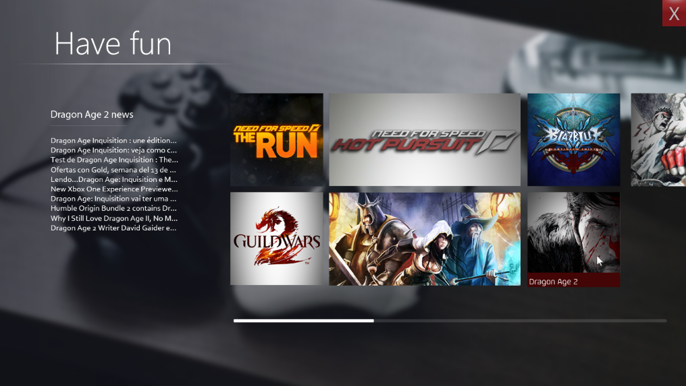
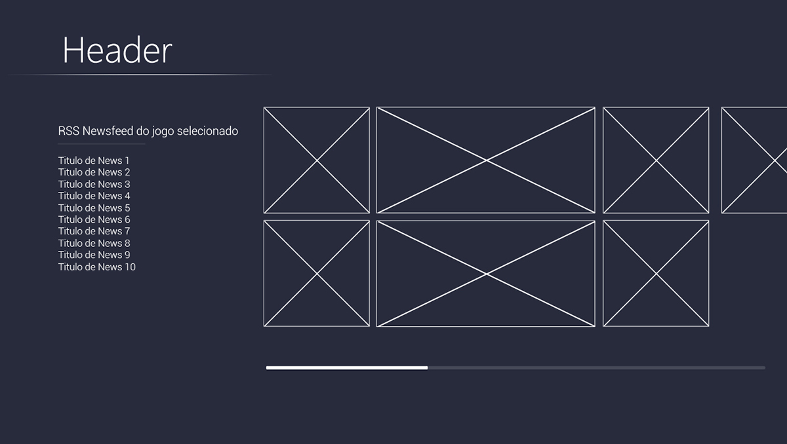
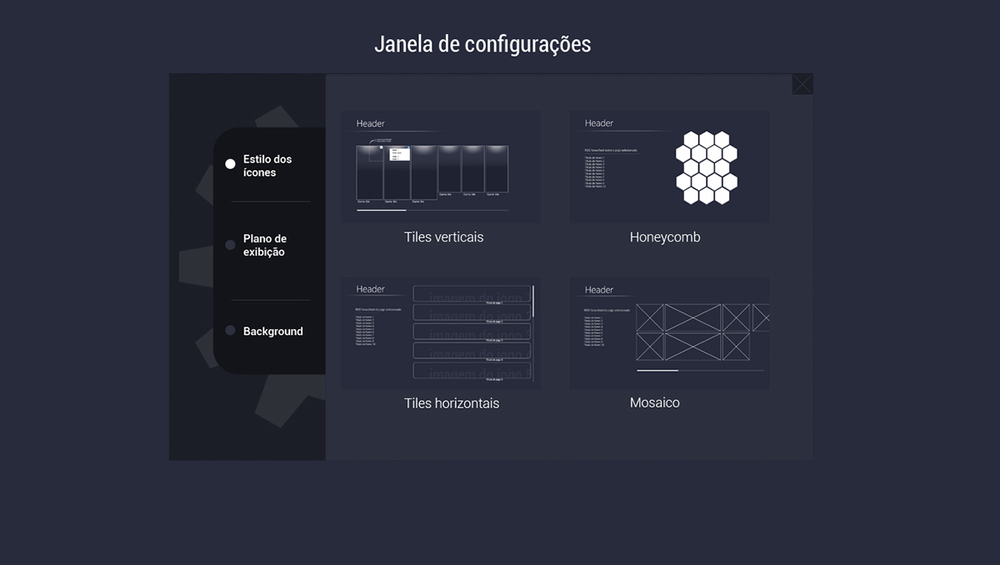
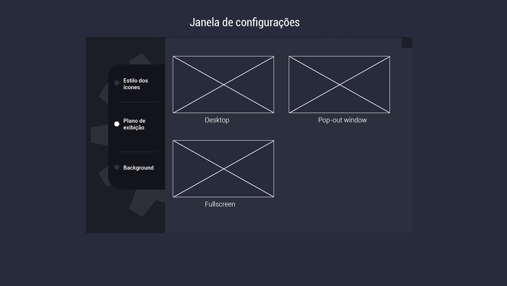

Comunicação Digital - Unisinos
Rio Grande do Sul - Brasil
Facebook: link
Twitter: douglaslins0
Instagram: douglaslins1
Behance: douglaslins



O Gamehall é um launcher de jogos desenvolvido para o Rainmeter - uma ferramenta de customização do Desktop, para o Windows. Diferente da maioria dos projetos desenvolvidos para o Rainmeter, o Gamehall não exige que usuário tenha conhecimento de como alterar as configurações em arquivos INI.
Em vez disso, ele realiza por si só a configuração, escaneando uma pasta qualquer - à escolha do usuário -, gerando um launcher para cada atalho detectado.
O Gamehall então busca pela capa oficial do jogo na internet - com base no nome do atalho - para que possa servir de ícone pro launcher. Cada launcher, é claro, pode ser customizado em questão de clicks.
VÍDEO//
DESENVOLVIMENTO//






